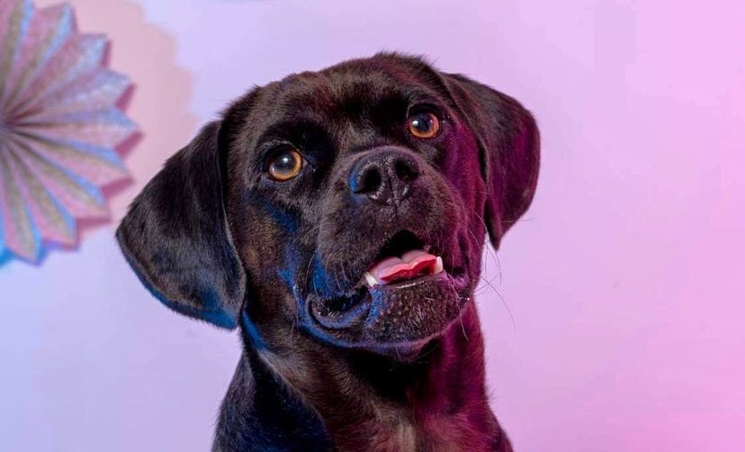

Your daily resource for news, articles and memes for, of and even by puggles!
The breed is the result of the mix between a beagle and pug. They usually turn out light beige, but there are black ones too! One thing is certain, you do get a lot of dog and companion in this breed. It wants you to take it out to search the woods, it wants you to play around with it in the dog park and it wants you to create its snuggly & cozy nest - preferably as close to you as possible.

The stages of a Puggle
Spoilt. Pleased. Playful. Fed up. Fed. Majestic. The stages of a puggle are as many as the numbers of hair they shed, but you'll be sure to love 'em just right.
The Pug of a Puggle just wants to cozy up with you and sleep. And to get treats. And pets. Did you know about the overflow-neck of Puggles? Very pinchable.
The Pug of a Puggle just wants to cozy up with you and sleep. And to get treats. And pets. Did you know about the overflow-neck of Puggles? Very pinchable.